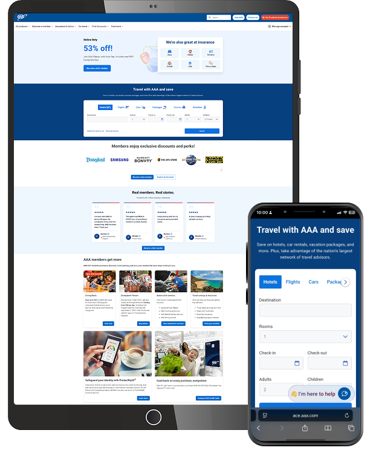
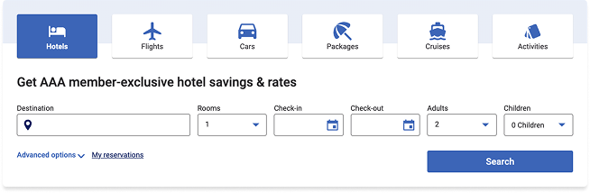
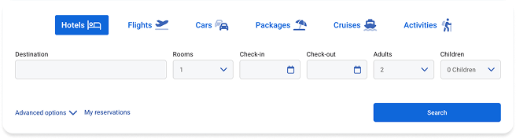
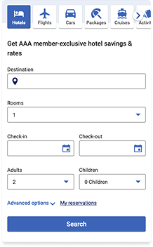
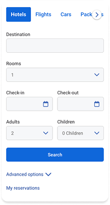

Travel search widget redesign
Modernizing the booking entry point across desktop and mobile.
Key results
37% increase in clicks
17.77% increase in bookings
The challenge
The control search widget was the entry point to every travel booking, but its design worked against the task. Six product tabs rendered as heavy bordered cards with stacked icons and labels, consuming a full band of vertical space before a member could reach a single input field. On mobile the tab row overflowed horizontally, cutting off Activities entirely and leaving Cruises partially hidden — two products effectively invisible to anyone who didn't think to scroll sideways.
A promotional headline sat between the tabs and the form, pushing the fields further down. Below it, an outlined field treatment gave every input the same visual weight, so nothing signaled where to start.
The solution
Rebuilt the widget around speed to first input.
Product tabs were flattened from bordered cards into inline text-and-icon links, with the active state carried by a single filled pill. This cut the tab band's height substantially and let all six products fit on one line on desktop. On mobile, the overflow was resolved with a visible forward affordance so members could tell more products existed rather than discovering them by accident.
The promotional headline was removed. It described a benefit members had already accepted by arriving at the widget, and it delayed the task.
Fields moved from outlined to filled treatment, creating a lighter, more scannable form where the input areas read as a connected group. On mobile, the search button was promoted directly beneath the fields, with Advanced options and My reservations demoted below it.
Conclusion
Clicks rose 37% and bookings 17.77% with no change to inventory, pricing, or the underlying booking flow. The lift came from removing what sat between the member and the first field: a heavy tab band, a redundant headline, and a mobile layout that hid two of six products.
The gap between the two numbers is itself informative. Clicks grew faster than bookings, which is what you'd expect when a redesign primarily improves discoverability: more members engaged with more products, including ones they previously couldn't see.